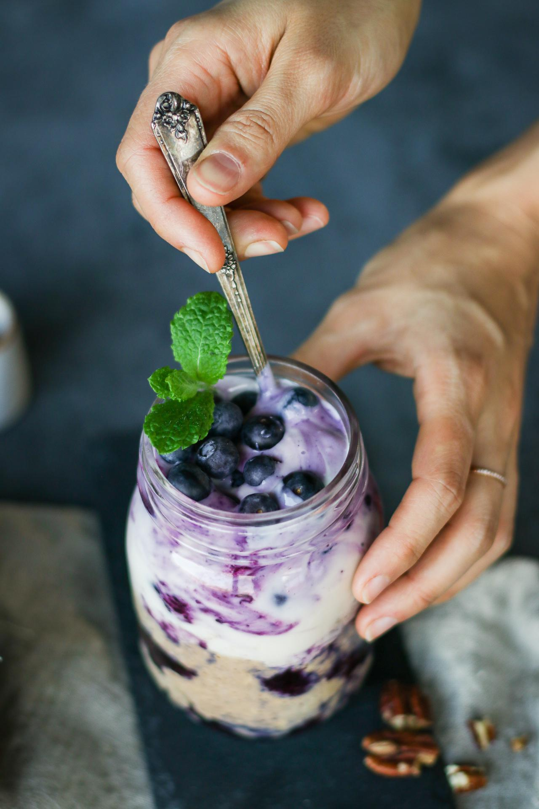

Blueberry Muffin Overnight Oats

Blueberry muffins for breakfast? Yes please!
This tie-dye overnight oats will remind you of comforting bakery-style muffins,
but served in a beautiful breakfast jar.
Ingredients
- ¾ cup (112 g) frozen blueberries
- ½ cup (120 mL) unsweetened soy milk*
- ½ cup (40 g) old-fashioned rolled oats
- 2 Tbsp (30 mL) cashew butter
- 1 Tbsp (15 mL) maple syrup
- 1 Tbsp (7 g) ground flaxseeds
- 1 Tbsp (7 g) chopped roasted pecans
- ¼ tsp ground cinnamon
- ⅓ cup (80 mL) unsweetened soy yogurt*
Steps
- Place a saucepan on medium-high heat, and add the frozen blueberries. Let the berries thaw for about 3 - 4 minutes, stirring occasionally. Alternatively, you could thaw the blueberries with the microwave.
- Use the back of a wooden spatula to mash some of the blueberries.
- Remove from the heat and let the berries cool off slightly.
- In a medium bowl, combine all of the remaining ingredients, except for the yogurt.
- Add half of the blueberries to the bottom of a mason jar or airtight container, and add the oat mixture in next.
- Add the yogurt and the other half of the blueberries on top, give it a gentle stir with a spoon to create a beautiful purple swirl, if desired.
- Cover and let it sit overnight in the fridge.
- The next morning, top with desired toppings, and enjoy!